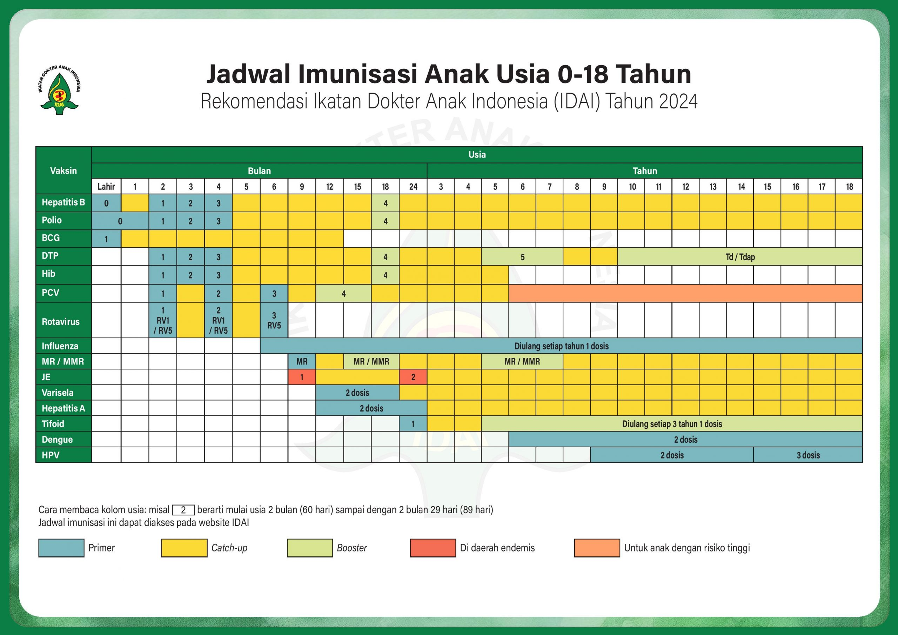

Kalkulator Dosis Obat
Hitung dosis obat anak berdasarkan berat badan atau usia.
🌌 Semesta Alat Bantu Klinis Anak
Semua alat bantu pediatri dalam satu tempat.
Akses fitur utama tanpa membuka menu lain.
Hitung dosis obat anak berdasarkan berat badan atau usia.
Plot growth chart WHO/CDC dan pantau pertumbuhan anak.
Bagan IDAI 2024 dan cek cepat rekomendasi berdasarkan usia.
Akses cepat ke perhitungan cairan dan kebutuhan klinis anak.
Buka protokol terapi dan rujukan praktis pediatri.
Simpan catatan ringkas pasien dan tindak lanjut.
Segera hadirLanjutkan pekerjaan dengan cepat.
Tekan bintang pada kartu fitur untuk mengatur favorit.
Informasi edukatif singkat hari ini.
WHO merekomendasikan ASI eksklusif hingga usia 6 bulan.Insight harian • untuk edukasi, bukan pengganti penilaian klinis
Ringkasan penggunaan berdasarkan akun.
Versi 2.1 • Fitur baru dan peningkatan terbaru.
Rekomendasi Ikatan Dokter Anak Indonesia (IDAI) Tahun 2024 untuk usia 0–18 tahun.

Gunakan bagan ini sebagai referensi cepat. Gambar dibuat fit dalam satu halaman; gunakan tombol zoom bila ingin melihat detail.
Cari atau pilih obat dari rak di bawah
😅 Obat tidak ditemukan, coba kata kunci lain ya!
Masukkan berat badan, lalu hitung dosisnya
Pilih diagnosis untuk melihat daftar obat & dosisnya
😅 Diagnosis tidak ditemukan, coba kata kunci lain ya!
Hasil adalah estimasi kebutuhan cairan rumatan harian dalam kondisi normal (tanpa dehidrasi/kehilangan cairan tambahan). Penyesuaian klinis tetap diperlukan sesuai kondisi pasien.
| Kelompok Usia | Volume per Episode BAB Cair |
|---|---|
| < 2 tahun | 50–100 mL |
| ≥ 2 tahun | 100–200 mL |
Diberikan sebagai tambahan di luar cairan/ASI/makan seperti biasa, untuk mengganti cairan yang hilang akibat diare, mencegah jatuh ke dehidrasi. Teruskan pemberian makan/ASI seperti biasa.
Untuk dehidrasi ringan–sedang. Cairan diberikan sedikit-sedikit tapi sering secara oral (oralit). Evaluasi ulang derajat hidrasi setelah 3 jam.
Untuk dehidrasi berat, jalur IV. Nilai ulang anak setiap 1–2 jam; jika hidrasi belum membaik, percepat tetesan. Berikan oralit (≈5 mL/kgBB/jam) segera setelah anak bisa minum.
Lintas Diare Anak — Rencana Terapi A, B, dan C untuk tata laksana cairan pada diare anak sesuai derajat dehidrasi.
Pilih standar kurva pertumbuhan yang ingin digunakan.
Pilih jenis kelamin anak.
Saat menambahkan gambar chart baru, gunakan alat ini untuk menghasilkan data calibration otomatis — cukup klik 4 tepi area kurva pada chart, lalu salin hasilnya ke GROWTH_CHART_CONFIG. Tidak perlu menebak posisi piksel manual.